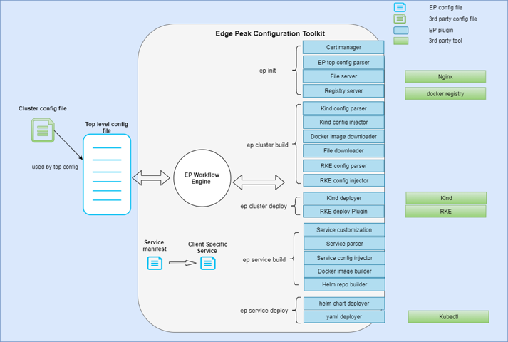
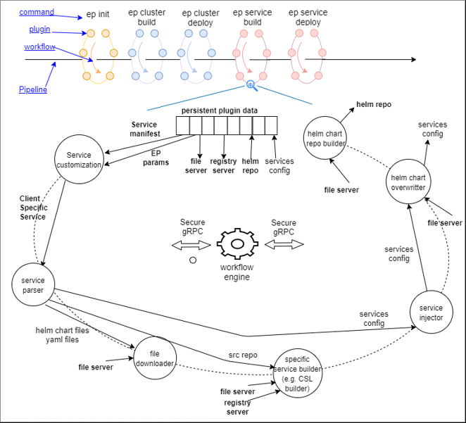
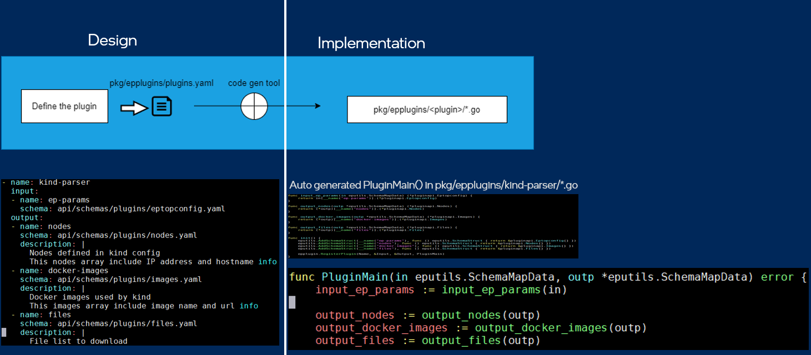
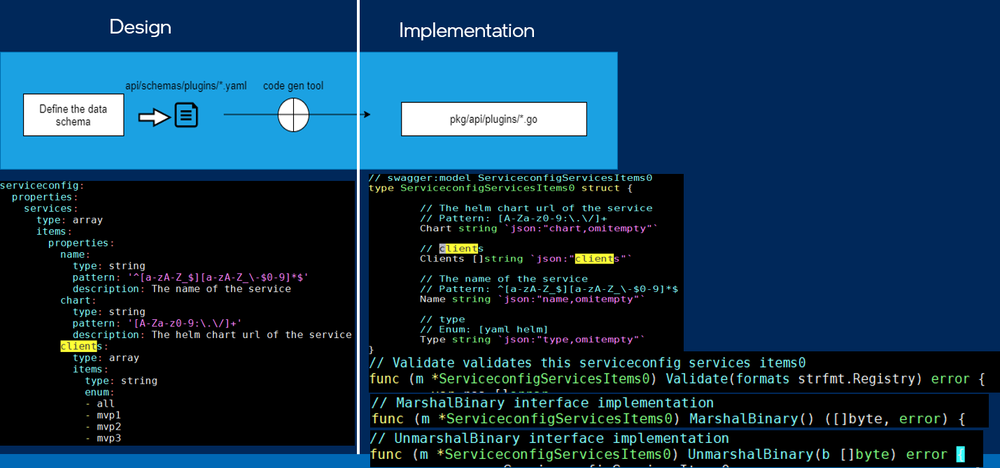
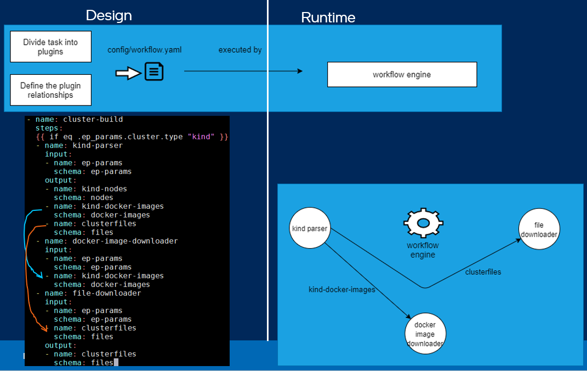

Edge Conductor Tool Low Level Design
Contents
Design Objectives
The Edge Conductor (Conductor) tool must meet the following design objectives:
Support various third party cluster build tools, such as Kind, RKE, Tanzu, and others.
Support building services from source. The build environment and process might be complex.
Include many services, such as harbor sevice to provide file server, registry, and Helm repository.
Provide a unified User Experience (UX). Users can use the same commands and steps to deploy different clusters and services.
Provide a good Developer Experience (DX). Developers can easily extend Conductor capabilities.
Terminology
Edge Conductor uses certain terminology in unique ways, including:
Pipeline: The Conductor tool provides commands for cluster and services deployment. The process of executing these commands to complete the deployment is called a pipeline.
Workflow and Plugin: The implementation of an Conductor command with steps is called a workflow. In a workflow, each step is realized by a plugin. The workflow is composed of plugins to achieve the goal of the command.
Data Schema: json-schema is widely used in many projects, such as Kubernetes, OpenAPI, etc. The Conductor tool uses json-schema to define the data format, value constraints, and data description. The plugin input/output data structures are defined by yaml files, and the code generation tool can create the code automatically from yaml files.
Design Overview
The Edge Conductor tool uses workflows and plugins to handle various requirements
and third party components. The plugins and their relationships are defined in
a workflow.yaml file, which is then executed by the engine, simplifying
customization. Plugins and their inputs/outputs are defined in a plugins.yaml
file. A plugin can run in a container, which is especially useful for plugins
that need to work with third party tools. Also, multiple plugins can run in one
container.
The diagram below shows how the various components work together.

Tool Implementation Logic
A pipeline executes multiple Conductor commands for cluster and services deployment. Every Conductor command has a corresponding workflow and a workflow contains multiple plugins. This relationship is shown in the diagram below.
The persistent plugin data, which is defined in workflow.yaml, can be used
across different workflows. Plugin output data can override the previous data
of the same name. All data with the same name should be defined by the same schema in the plugins.yaml file.

Plugin Design
Conductor plugins only care about their own function implementation. The workflow engine controls interaction with other plugins.
One of the concepts of Conductor is to separate the design and implementation of
plugins. The plugin and its interfaces are designed based on the known
requirements, without writing any code. Then the code is generated from the
plugins.yaml file. See the diagram below for details.
This distinct separation means that developers can focus on implementing the plugin’s logic with clear input/output definitions. This also makes it easy to collaborate with other developers, since they can learn about the plugin and its interfaces without having to access the code.

Data Structure Design
Conductor data structures are designed with declarative programming. Similar to plugin
design, data structure design and implementation are separated. First, the
plugin data structures are designed based on the known requirements before
implementation. The code is generated from the api/plugins/*.yaml file.
See the diagram below for details.
Collaboration with other developers is simplified, since they can learn about the data structures without having to access the code.

Workflow Design
Conductor workflows are designed with declarative programming. Similar to plugin design, workflow design and implementation are separated. First, the plugin functionality and interfaces must be clearly defined. Then, the workflows are designed based on the plugin requirements before implementation. See the diagram below for details.
Conductor workflows use a template syntax that is similar to a Helm chart. The workflows are easy to customize and extendable.

Copyright (c) 2022 Intel Corporation
SPDX-License-Identifier: Apache-2.0